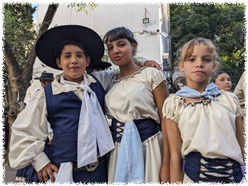

アルゼンチン

| Facebookページへは各 |  |
から飛べます |
【アルゼンチン1】三大瀑布の中でも断トツの規模を誇るイグアスの滝。陸路国境越えルートが断たれたことで万事休すかと思いましたが諦めきれず、急遽ブエノスアイレス経由プエルトイグアス行きの航空券を取りました。 さようならウルグアイ、良い国でした。
Akira Mizuiさんの投稿 2025年5月3日土曜日
【アルゼンチン2】ブエノスアイレスへ戻ってまちに出ると賑やかな集会が開かれていました。聞けば民俗芸術研究所の祭典だとか。フォークロアに興味のある者にとって夢の世界、時を忘れて過ごしました。
Akira Mizuiさんの投稿 2025年5月5日月曜日